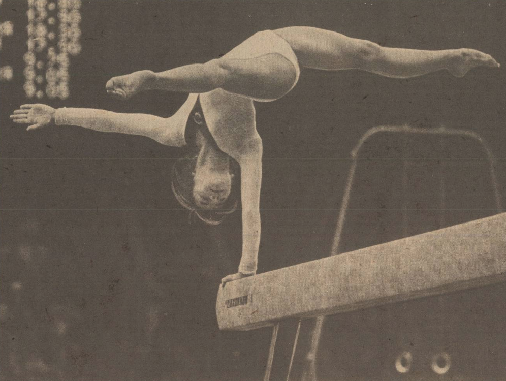

Natalia Shaposhnikova (USSR)
1978 World AA Bronze Medalist, 1980 Olympic
V Champion

Shaposhnikova performs her incredible one-arm handstand.
|
Medal Total
- Olympic Games: 2 Gold, 2
Bronze
- World Championships: 1
Gold, 1 Silver, 1 Bronze
- World Cup: 2 Gold, 2
Silver, 2 Bronze
- European Championships: 1
Gold, 1 Silver, 2 Bronze
|
Natalia was born on June 24, 1961 in
Rostov-on-Don. When she was in the 2nd grade, Natalia started
gymnastics -- rhythmic to be exact -- at the Dynamo club. Soon, she was
spotted by an artistic gymnastics coach, Galina Maleeva, who convinced the
rhythmic coach to transfer Natalia to her group. After a while she joined the
group of famed coach Vladislav Rastorotsky (who also coached Ludmila
Turischeva, Natalia Yurchenko and Albina
Shishova). Shaposhnikova is perhaps best known as being the first
female to perform giant swings on uneven bars. Her beam routine was also
memorable, featuring a planche mount and one-arm twisting handstand, skills that
are rarely performed even today.
Natalia married Pavel Sut, a USSR
national team member, on May 1, 1982. They have a daughter, Olga, and a son, Paul. The Suts live
in New Jersey and own a gym school called Gymnastika.
- Competition Results
-
- 1975
Jr. Friendship Tournament (Druzhba): 1st Team,
21st AA
Jr. CSSR-USSR Dual Meet: 1st Team, 3rd AA
1976
- All-Union School Spartakiade: 4th AA,
3rd B, 2nd FX
Jr. Friendship Tournament (Druzhba): 1st Team, 3rd AA
Moscow News: 3rd AA, 2nd V, 1st B, 1st FX
- USSR-CSSR Dual Meet: 1st Team, 5th AA,
5th UB, 1st FX
USSR Championships: 3rd AA, 3rd FX
-
USSR Cup: 13th AA
-
- 1977
- Chunichi Cup: 3rd AA
- Moscow News: 2nd AA, 1st UB, 2nd V, 2nd FX
- USSR Championships: 3rd AA, 1st V, 2nd
UB, 2nd B
- USSR Cup: 1st AA
- World Cup: 3rd AA, 1st V, 5th UB, 4th
FX
-
- 1978
- RSFSR Championships: 3rd AA, 1st B
USSR Cup: 1st AA (prelims)
USSR Schoolchildren's Spartakiad: 1st Team, 1st AA
World Championships: 1st Team, 3rd AA,
6th V, 8th B
- World Cup: 3rd AA, 1st V, 2nd B, 2nd FX
-
- 1979
- European Championships: 3rd AA, 1st B, 2nd FX,
3rd V, 6th UB
- Moscow News: 2nd AA, 1st
UB, 1st B, 2nd FX
- Pre-Olympics/USSR Spartakiade: 1st Team,
1st AA, 1st B, 2nd UB,
2nd FX
- USSR Championships: 1st AA, 1st B, 2nd
FX, 3rd UB, 8th V
- USSR Cup: 1st AA
- World Championships: 2nd Team, 7th AA
(prelims)
-
- 1980
- Olympic Games: 4th AA, 1st Team, 1st V, 3rd B, 3rd FX
- USSR Championships: 5th AA
- USSR Cup: 2nd AA
1981
Giresum International: 2nd AA
USSR Championships: 6th FX, 7th UB
- This page was created on November 1, 1997 and was last
updated on August 30, 2026.
© Gymn Forum